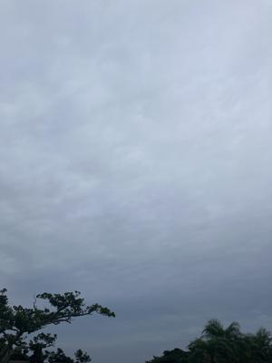
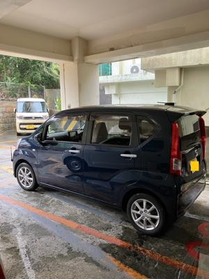

うるがいの話 ある日
最新: マンションの駐車場【うるがいの話 ある日】とは 一日だけのプログです
『うるがいの話』の最新一日だけのプログで、通信料が少なく経済的だ。カニの画像をクリックすると全ての日付が載る『うるがいの話』サイトを表示します
|
|
【うるがいの話】 うるがい(ｳﾙｶﾞｲ urugai)とは、『もずくがに』の名前でとても大きくなります。 |
|---|---|
|
|
【カミマヤーの話】 猫のことを方言でマヤーといいます。カミマヤー（kamimayaa）とは、神の猫のことです。 |
|
【たながぁの音楽】 たながぁ（ﾀﾅｶﾞｰ tanagaa）とは手長えびのことで、何種類かあり大きいのは車 エビぐらいになります。 |

|
【ぶながぁの話】 ぶながぁ(ﾌﾞﾅｶﾞｰ bunagaa)とは、赤い髪の毛、赤い身体、そして身長は１ｍ２０ｃｍ ぐらい、川の蟹を食べているの目撃された。場所は沖縄県国頭郡大宜味村のと ある村僕の隣近所に住んでいる爺さんから、聞いた話です。 |
|
|
【ギーマの話】 ギーマ(giima)とは、山原の里山に咲くスズランに似た、 花を付けます。実は食べられます、 気が付くと口の周りが紫になっています。 |
2025年06月05日 (木）マンションの駐車場
17:16

５月２５日にマンションの駐車場の抽選が、行われた。昨日の雨の
中、確認と契約手続きのためマンションへ行く。屋内、普通乗用車
駐車料金６千円、駐車場に停める。ウン、なかなかである。

その昔、ヨメのお義父さんがブレーキとアクセルを間違って、マン
ションの軽自動車にぶつけた。保険会社からの保証額が、少ないと
その持ち主の親から強烈なクレームがあり、なぜか私と保険会社の
担当者で、その部屋へいって謝った思い出がある。それからお義父
さんは車の運転をやめた。値段が、もっと下がればという人がいて
不動産と調整、その買いたいという人なりはいいので価格交渉を不
動産の担当の人に、一任することにした。
８階の内装工事が、５月１９日迄となっていたが、工事業者が調整
できず大幅に伸びていると管理人が言っていた。ホー、そだろうネ
いまどき、なかなかリホームの業者はいない。
ヘリコプターの音が、五月蠅い。この話しは、明日にしよう。